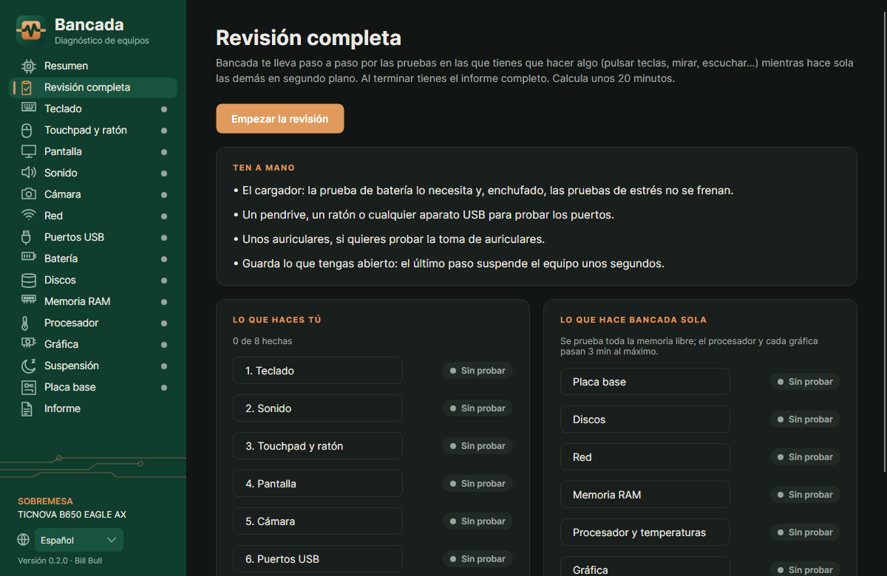
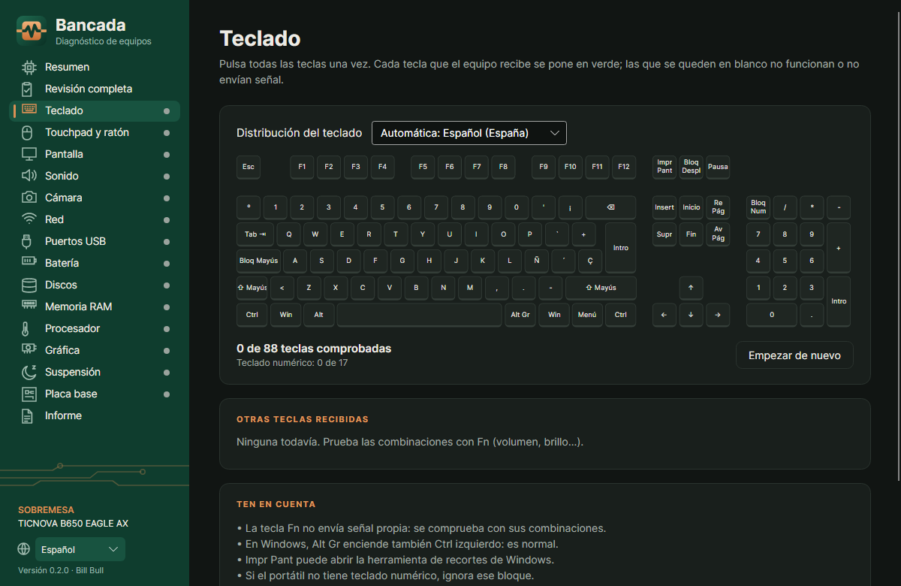
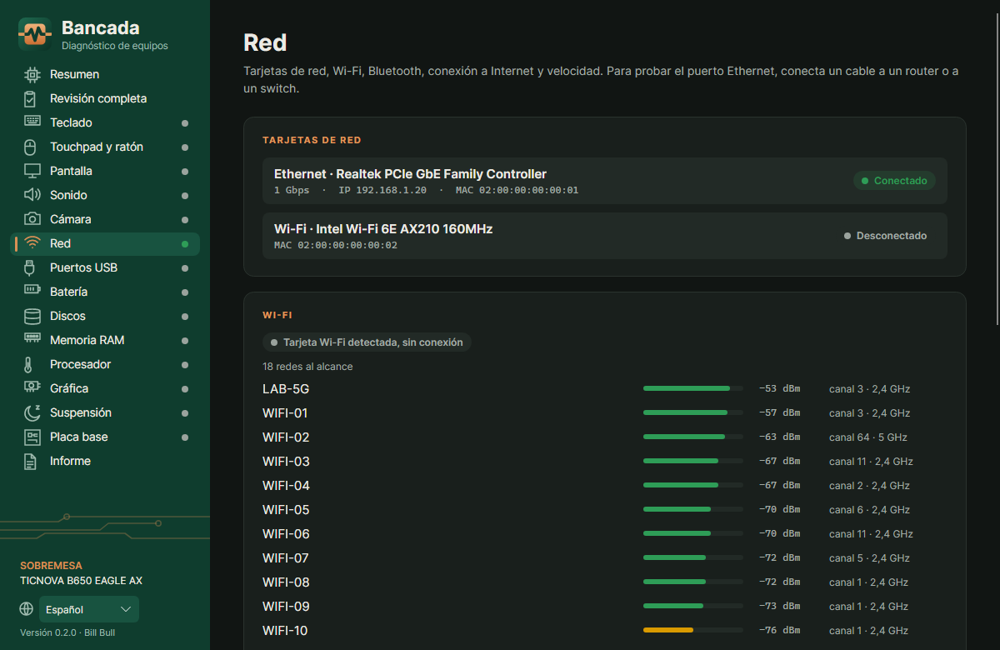
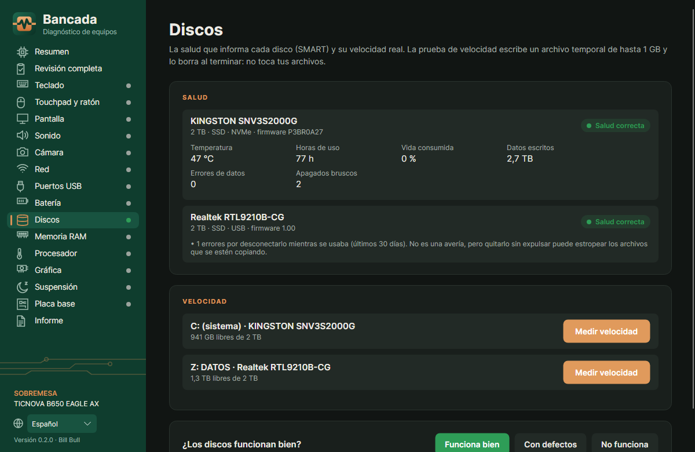
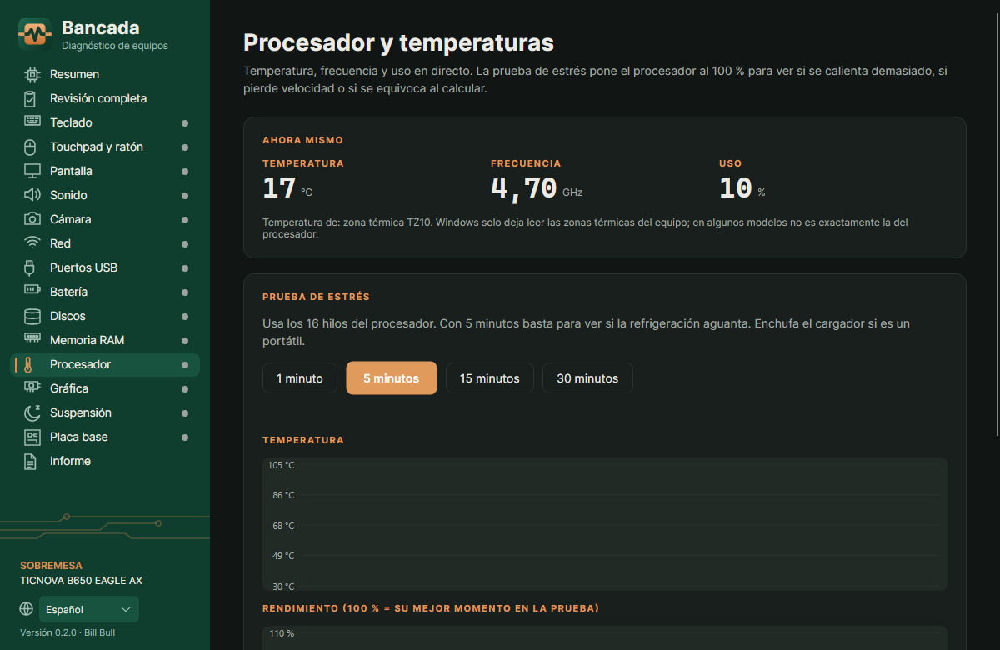
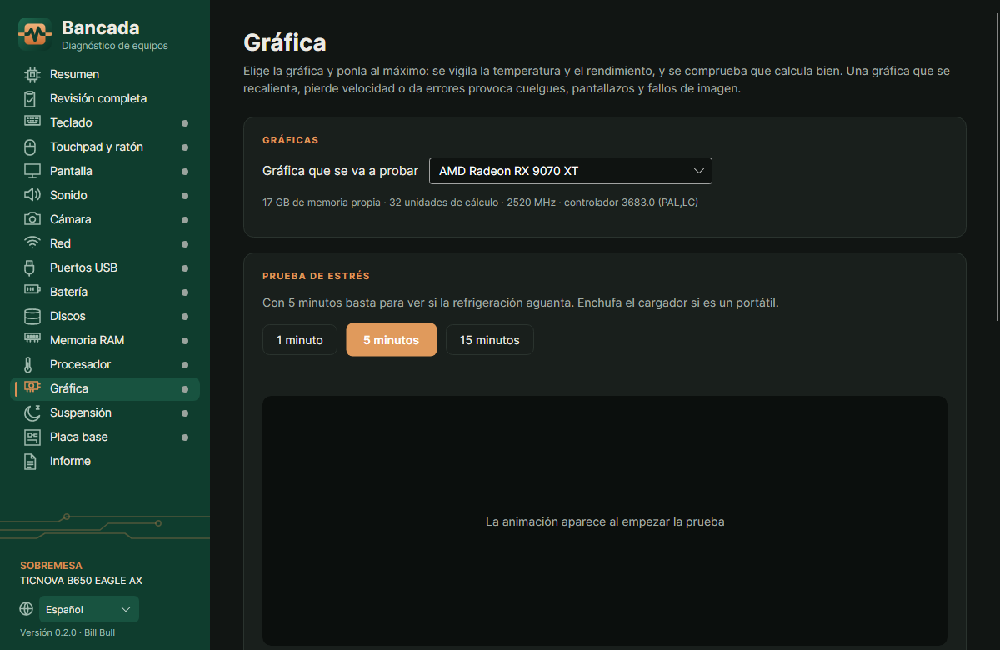
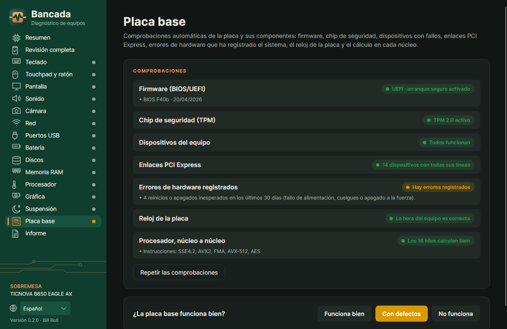
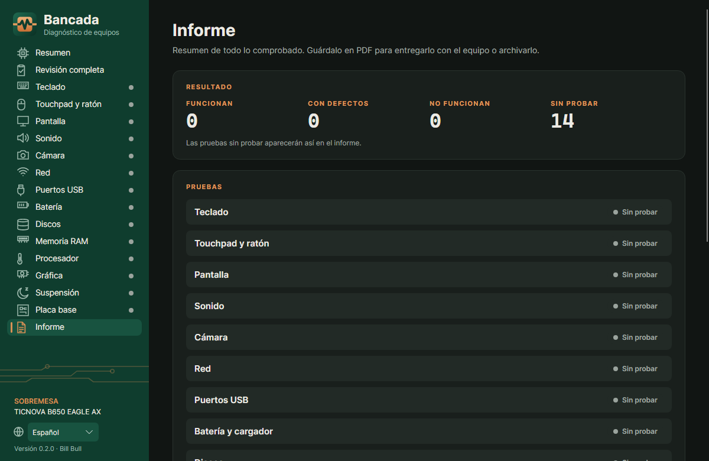

Guía de uso de Bancada
Antes de empezar
- Descarga el ejecutable de tu sistema desde la última versión. Puedes llevarlo en un pendrive: no se instala y no deja nada en el equipo salvo sus ajustes (idioma y teclado).
- Ábrelo en el equipo que vas a revisar.
- Windows: doble clic. La primera vez puede salir «Windows protegió su PC»: pulsa Más información › Ejecutar de todas formas.
- Linux:
chmod +x Bancada-linux-x64 && ./Bancada-linux-x64.
- Ten a mano: el cargador (si es portátil), un pendrive o un ratón USB para los puertos y, si quieres probar la toma de auriculares, unos auriculares.
- Permisos. Casi todo funciona como usuario normal. Como administrador (Windows) o con
sudo(Linux) se ven además el número de serie, los módulos de RAM y el SMART completo de los discos SATA.
El idioma se elige en la parte de abajo de la barra lateral (icono del globo) y se recuerda.
La pantalla principal
A la izquierda está la lista de pruebas. El punto de color junto a cada una indica su veredicto: Funciona bien, Con defectos, No funciona o sin probar. Al final de cada prueba hay una barra para marcar el veredicto; en las automáticas viene propuesto y puedes cambiarlo.

Resumen muestra lo que lleva el equipo: marca, modelo y número de serie, tipo (portátil, sobremesa, todo en uno, mini PC), procesador, RAM y ranuras ocupadas, gráficas, discos con su salud, batería, placa y BIOS.
Revisión completa (guiada)

Pulsa Empezar la revisión. Bancada te lleva paso a paso por las pruebas en las que tienes que hacer algo: teclado → sonido → touchpad → pantalla → cámara → USB → batería → suspensión. Mientras tanto, en segundo plano y una detrás de otra, hace las automáticas: placa → discos → red → memoria → procesador → cada gráfica. El panel de abajo enseña cuál va por dónde.
- Las pruebas de estrés esperan a que termines la de sonido, para que el ruido del ventilador no moleste.
- Puedes saltarte un paso; lo que no se pruebe saldrá como «Sin probar» en el informe.
- El último paso suspende el equipo unos segundos: guarda lo que tengas abierto.
- Calcula unos 20 minutos. Al acabar, Terminar y ver el informe.
Pruebas una a una
Teclado

Pulsa cada tecla una vez: las que llegan se ponen en verde; las que se quedan sin color no funcionan o no envían señal. La distribución sigue al idioma y al teclado del sistema; puedes elegir otra en el desplegable (española, latinoamericana, EE. UU., Reino Unido, Portugal, Brasil ABNT2, alemana, francesa e italiana). Las teclas multimedia (combinaciones con Fn) aparecen en «Otras teclas recibidas». En Windows, Alt Gr enciende también Ctrl izquierdo, y Impr Pant puede abrir la herramienta de recortes: es normal.
Touchpad y ratón
Mueve el puntero por la zona hasta llenarla. Si en algún sitio se para o salta, esa parte del touchpad está dañada: repasa también bordes y esquinas. Prueba clic izquierdo, derecho y central, doble clic, arrastrar, la rueda o el desplazamiento con dos dedos, los botones laterales, la pantalla táctil y el lápiz si los hay.
Pantalla
Empezar prueba de pantalla llena la pantalla de colores lisos, degradados y cuadrícula. Clic, espacio o → pasa al siguiente; ← vuelve; Esc sale. Busca píxeles muertos o fijos, manchas, fugas de luz en los bordes, bandas en los degradados y brillo desigual.
Sonido
Cada botón suena por un solo lado; el barrido de graves a agudos sirve para oír si algo vibra, zumba o cruje. Escuchar el micrófono enseña el nivel en directo (habla o da una palmada) y Grabar 5 segundos y reproducir te deja oír lo que capta. Después conecta auriculares y repite para probar la toma.
Cámara
Enciende cada cámara y mira que la imagen sea nítida, con colores normales y sin cortes. Si sale negra, revisa la tapa de privacidad o la tecla que la desactiva. La imagen nunca se guarda ni sale del equipo.
Red

Lista las tarjetas físicas con su velocidad de enlace, la Wi-Fi con las redes cercanas (señal, canal y banda) y el Bluetooth. La conexión se comprueba por pasos (router → DNS → Internet → web segura) para ver dónde se corta. Medir velocidad hace 10 s de bajada y 10 de subida contra los servidores de Cloudflare. Para probar el puerto Ethernet, conecta un cable a un router o un switch.
Puertos USB
Conecta un pendrive, un ratón o cualquier aparato en cada puerto, de uno en uno: cada puerto que responde queda marcado con su velocidad real. Si un aparato USB 3 conecta a velocidad USB 2, prueba otro cable; si no cambia, el conector del puerto puede estar dañado. Un ratón o un teclado siempre van a USB 1 o 2.
Batería y cargador
Muestra la capacidad de fábrica y la actual, la salud, los ciclos y el consumo en directo.
- Prueba del cargador: desenchufa y vuelve a enchufar siguiendo los pasos; comprueba cargador, cable y conector.
- Prueba de descarga: con el cargador quitado, mide cuánto dura de verdad. Eliges qué hace el equipo (en reposo con la pantalla encendida, navegando, viendo vídeo o a carga máxima), cuándo parar (por tiempo o al llegar a un porcentaje) y el brillo. Detecta caídas bruscas del porcentaje (celdas en mal estado) y un indicador descalibrado. Haz varias con distintos usos y el informe las junta en una tabla de autonomía.
Discos

Salud SMART de cada disco (temperatura, horas, vida consumida, sectores dañados), errores de lectura y escritura que ha registrado el sistema, y velocidad real de lectura, escritura y lectura aleatoria de 4 KB. La prueba de velocidad escribe un archivo temporal de hasta 1 GB y lo borra al acabar: tus archivos no se tocan.
Memoria RAM
Llena la memoria libre con 8 patrones y comprueba que se lee exactamente lo escrito. Un solo error significa que un módulo está mal; prueba los módulos de uno en uno para saber cuál. Con el sistema en marcha solo se puede probar la memoria libre: para probarla entera, Bancada abre el diagnóstico de memoria de Windows o te indica cómo arrancar MemTest86+ en Linux.
Procesador

Temperatura, frecuencia y uso en directo. La prueba de estrés usa todos los hilos y vigila si se calienta demasiado, si baja el rendimiento por temperatura y si algún cálculo sale mal. Con 5 minutos basta para ver si la refrigeración aguanta; si es portátil, conecta el cargador.
Gráfica

Elige la gráfica por su nombre (dedicada, integrada o cualquier otra) y ponla al máximo: se vigilan temperatura y rendimiento y se comprueban sus cálculos. Comprobar la memoria de vídeo busca fallos de VRAM, los que causan rayas y puntos de colores. Usa OpenCL, que viene con los controladores de NVIDIA, AMD e Intel; en Linux puede hacer falta instalar el paquete OpenCL de tu gráfica.
Suspensión
Suspende el equipo y comprueba que vuelve bien: cuánto estuvo dormido, si la red se recupera y si algún dispositivo deja de funcionar. En equipos con suspensión moderna, despiértalo tú con una tecla como haría el cliente. Si no vuelve y hay que forzar el apagado, al abrir Bancada otra vez lo marca como fallo.
Placa base

Comprobaciones automáticas: firmware y arranque seguro, chip TPM, dispositivos con fallos o sin controlador, enlaces PCI Express con menos líneas de las debidas, errores de hardware registrados, reloj de la placa (pila CMOS) y cálculo correcto núcleo a núcleo.
El informe

Junta todas las pruebas con sus medidas, observaciones y veredictos. Añade tus notas (estado físico, golpes, lo que contó el cliente…) y pulsa Guardar informe en PDF: se guarda en Documentos y lleva el número de serie del equipo.
Problemas frecuentes
| Qué pasa | Qué hacer |
|---|---|
| Windows avisa de que el programa no es seguro | Es porque el ejecutable aún no está firmado: Más información › Ejecutar de todas formas. |
| No aparece la temperatura del procesador en Windows | Algunos equipos solo la dan a programas con controlador propio. La prueba de estrés sigue detectando pérdidas de rendimiento y errores. |
| «No hay ningún controlador OpenCL» en la gráfica | Instala o actualiza el controlador desde la web de NVIDIA, AMD o Intel. En Linux: intel-opencl-icd, mesa-opencl-icd o ROCm. |
| No salen las redes Wi-Fi en Windows | Activa Configuración › Privacidad y seguridad › Ubicación › Permitir que las aplicaciones de escritorio accedan a la ubicación. |
| En Linux no se ven los datos SMART | Instala smartmontools y abre Bancada con sudo. |
| En Linux no arranca y pide libICE o libSM | Instala libice6 y libsm6 (los necesita la interfaz en X11). |